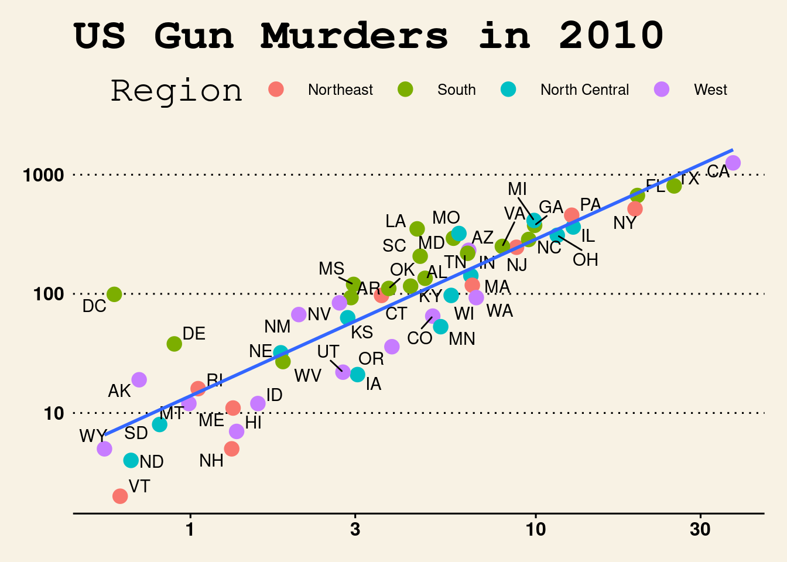

Code
# loading packages
library(tidyverse)
library(knitr)
library(ggthemes)
library(ggrepel)
library(dslabs)Named Entity Recognition (NER) is a critical component in Natural Language Processing (NLP) that aims to identify and extract named entities from unstructured text. It is a challenging task due to the complexity and ambiguity of natural language, and it plays a vital role in various NLP applications such as information retrieval, question answering, and machine translation. In recent years, deep learning techniques have shown great promise in achieving state-of-the-art results in NER tasks. Deep learning is a subset of machine learning that involves training artificial neural networks to learn from data and make predictions. One of the most popular deep learning architectures for NER is the Transformer model, which was introduced in 2017 and has since become a cornerstone of modern NLP. In addition to the Transformer model, there are many other deep learning techniques that have been applied to NER, including Recurrent Neural Networks (RNNs), Convolutional Neural Networks (CNNs), and Bidirectional Encoder Representations from Transformers (BERT), among others. In this research project, we explore various deep learning techniques for NER and compare their performance on a benchmark dataset, with the goal of improving the accuracy and efficiency of NER systems.
We are utilizing the articles and summaries under the references heading. This is a working introduction and the articles are linked below.
https://www.kaggle.com/datasets/finalepoch/medical-ner?select=Corona2.json
The common non-parametric regression model is \(Y_i = m(X_i) + \varepsilon_i\), where \(Y_i\) can be defined as the sum of the regression function value \(m(x)\) for \(X_i\). Here \(m(x)\) is unknown and \(\varepsilon_i\) some errors. With the help of this definition, we can create the estimation for local averaging i.e. \(m(x)\) can be estimated with the product of \(Y_i\) average and \(X_i\) is near to \(x\). In other words, this means that we are discovering the line through the data points with the help of surrounding data points. The estimation formula is printed below (R Core Team 2019):
\[ M_n(x) = \sum_{i=1}^{n} W_n (X_i) Y_i \tag{1} \] \(W_n(x)\) is the sum of weights that belongs to all real numbers. Weights are positive numbers and small if \(X_i\) is far from \(x\).
A study was conducted to determine how…
# loading packages
library(tidyverse)
library(knitr)
library(ggthemes)
library(ggrepel)
library(dslabs)# Load Data
kable(head(murders))| state | abb | region | population | total |
|---|---|---|---|---|
| Alabama | AL | South | 4779736 | 135 |
| Alaska | AK | West | 710231 | 19 |
| Arizona | AZ | West | 6392017 | 232 |
| Arkansas | AR | South | 2915918 | 93 |
| California | CA | West | 37253956 | 1257 |
| Colorado | CO | West | 5029196 | 65 |
ggplot1 = murders %>% ggplot(mapping = aes(x=population/10^6, y=total))
ggplot1 + geom_point(aes(col=region), size = 4) +
geom_text_repel(aes(label=abb)) +
scale_x_log10() +
scale_y_log10() +
geom_smooth(formula = "y~x", method=lm,se = F)+
xlab("Populations in millions (log10 scale)") +
ylab("Total number of murders (log10 scale)") +
ggtitle("US Gun Murders in 2010") +
scale_color_discrete(name = "Region")+
theme_wsj()
#Rough Draft of References and their summaries: Xiong, Chen, S., Tang, B., Chen, Q., Wang, X., Yan, J., & Zhou, Y. (2021). Improving deep learning method for biomedical named entity recognition by using entity definition information. BMC Bioinformatics, 22(Suppl 1), 600–600. https://doi-org.ezproxy.lib.uwf.edu/10.1186/s12859-021-04236-yLinks to an external site.
-This article focuses on biomedical named entity recognition. This is used for text mining of biomedical texts to find different entity mentions and determine their type. This article investigated how to use entity definition for squad-style machine reading comprehension and span-level one-pass methods. This article defined Biomedical named entity recognition as “a fundamental task of biomedical text mining to identify biomedical entity mentions of different types in biomedical text.” Meaning that Biomedical NER is used to comb through biomedical texts to identify different mentions and categorize them (from my small understanding of this topic). The article even mentions that the entity type meanings can be represented by its definition, citing an example of the definition of PROTEINAS. This paper wanted to be able to encode these definitions into two different methods, mentioned above. In doing this, the article explains that introducing entity definition information is effective and improved both method types meaning it is useful for deep learning with biomedical NER. They credit this with comparisions to previous models saying that their model can recognize more due to it having more domain knowledge in with the definition information.
Jian Liu, Lei Gao, Sujie Guo, Rui Ding, Xin Huang, Long Ye, Qinghua Meng, Asef Nazari, Dhananjay Thiruvady, A hybrid deep-learning approach for complex biochemical named entity recognition, Knowledge-Based Systems, Volume 221, 2021, 106958, ISSN 0950-7051, https://doi.org/10.1016/j.knosys.2021.106958. (https://www.sciencedirect.com/science/article/pii/S0950705121002215)
https://arxiv.org/pdf/1706.03762.pdf
https://arxiv.org/pdf/1910.10683.pdf
https://arxiv.org/pdf/1810.04805.pdf
https://arxiv.org/abs/1910.11470
https://ojs.aaai.org/index.php/AAAI/article/view/3861
https://arxiv.org/abs/1909.10649